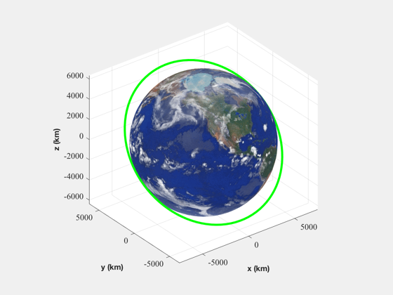
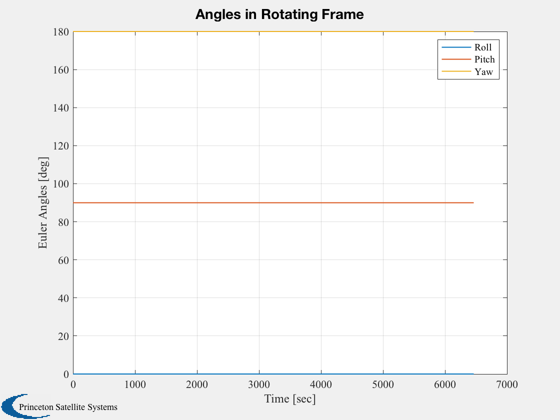
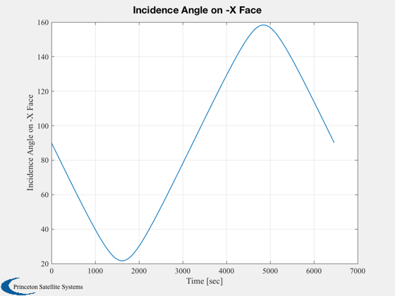
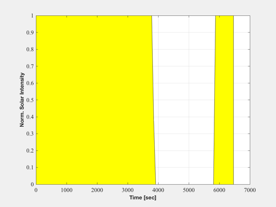

Demonstrate simple orbit and attitude ephemeris analysis
------------------------------------------------------------------------
See also Q2Eul, QLVLH, QMult, QNadirPoint, QPose, QTForm, Map, Dot,
Date2JD, RVFromKepler, Period, Eclipse, SunV1
------------------------------------------------------------------------
Contents
clear variables
clear area
ORBITAL ELEMENTS
a i W w e M
el = [7500, pi/4, 0, 0, 0, 0];
Time vector
t = linspace(0,Period(7500));
Earth-Centered Inertial Position and Velocity
[r,v] = RVFromKepler( el, t );
Show Orbit
Map, hold on
plot3(r(1,:),r(2,:),r(3,:),'g','linewidth',3)

NADIR pointing attitude profile
uAntenna = [1;0;0];
qIB = QNadirPoint( r, v, uAntenna );
Compute Euler angles in rotating frame
qIL = QLVLH( r, v );
qLB = zeros(size(qIL));
e = zeros(3,length(t));
for i=1:length(t),
qLI = QPose(qIL(:,i));
qLB(:,i) = QMult( qLI, qIB(:,i) );
e(:,i) = Q2Eul(qLB(:,i));
end
e = acos( cos(e) );
Plot2D(t,e*180/pi,'Time [sec]','Euler Angles [deg]','Angles in Rotating Frame');
legend('Roll','Pitch','Yaw')

Evaluate sun exposure on -x face
jD = Date2JD([2008 6 21 0 0 0]);
uBody = [-1;0;0];
[uSun,rs] = SunV1( jD+t/86400, r );
uBodyI = QTForm( qIB, uBody );
theta = acos(Dot(uSun,uBodyI));
Plot2D(t,theta*180/pi,'Time [sec]','Incidence Angle on -X Face');

Eclipse times
ecl = Eclipse( r, uSun*mean(rs) );
NewFig('Eclipse Times')
area(t,ecl,'facecolor','y')
XLabelS('Time [sec]')
YLabelS('Norm. Solar Intensity')
grid on
